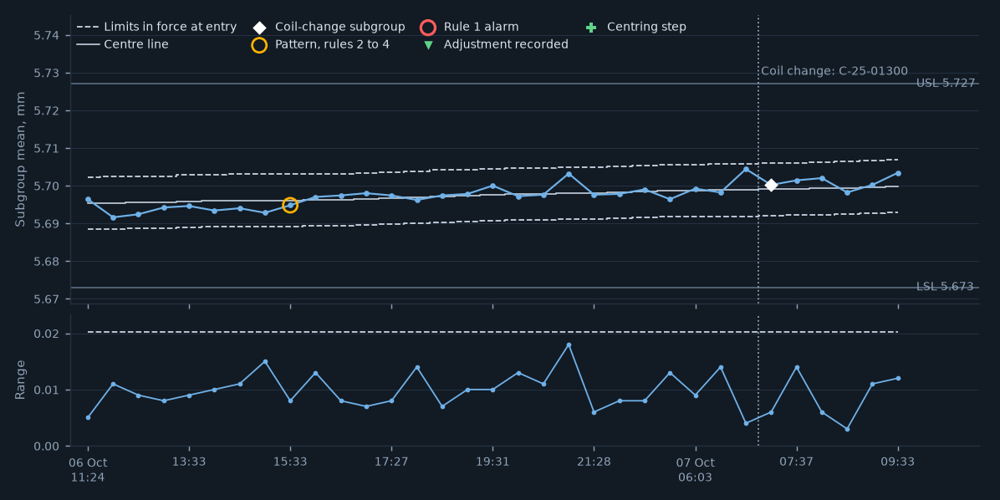
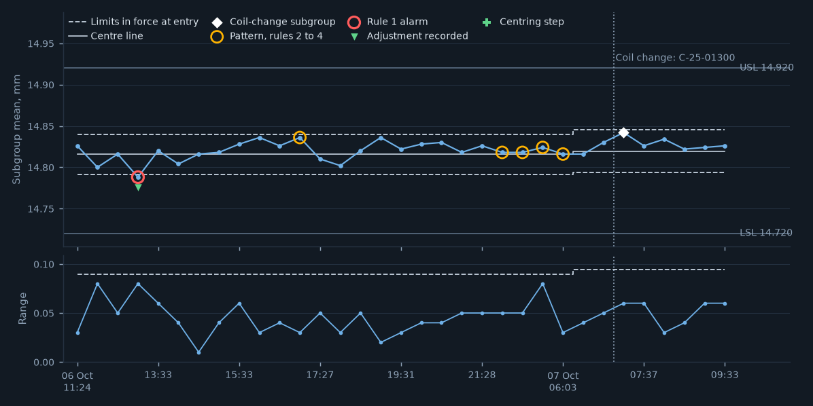
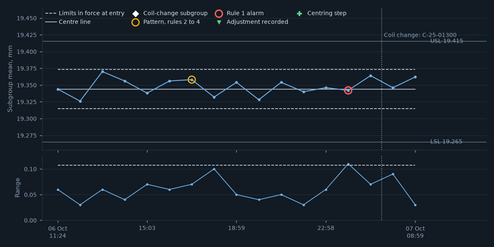
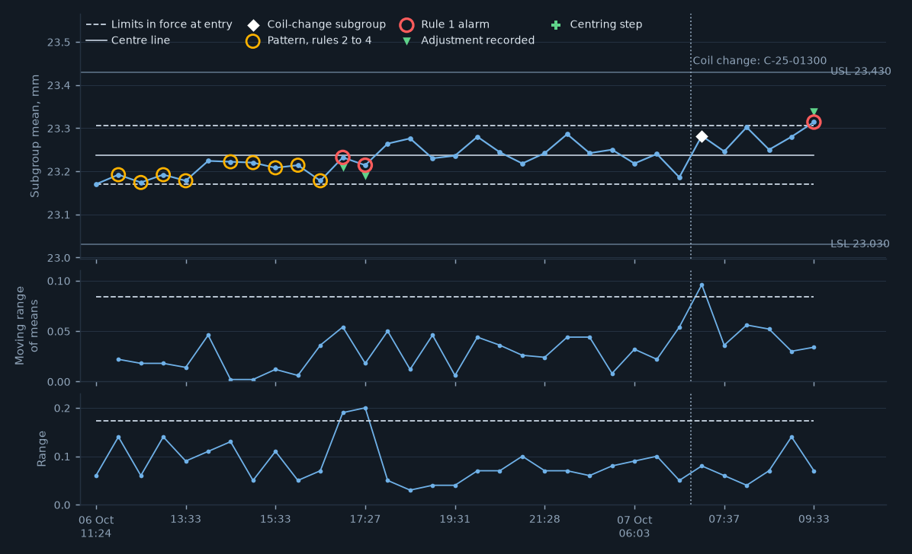
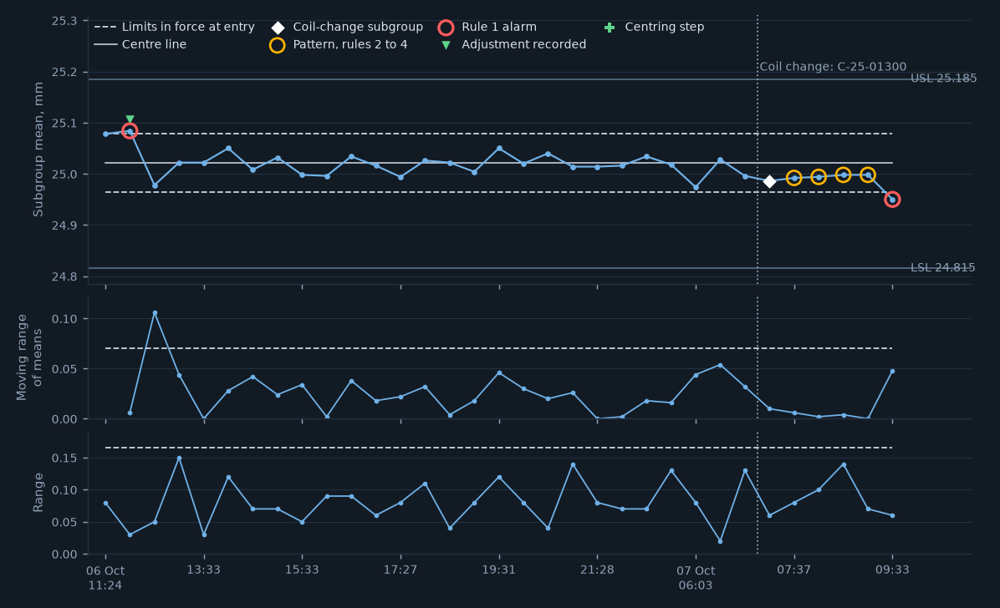
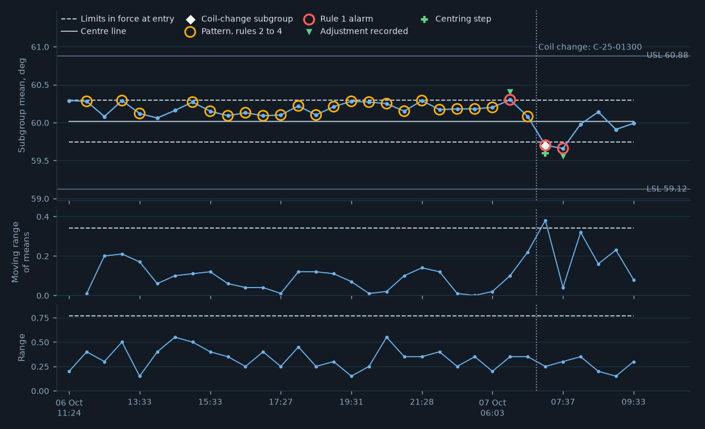

| Characteristic and chart | Last | Status |
|---|---|---|
| C-16315-01 hole diameter A attribute check | pass 08:59 | PASS |
| C-16315-02 ◆ hole diameter B tool-wear chart | 5.703 09:33 | IN CONTROL |
| C-16315-03 ◆ hole to edge C X-bar and R | 14.826 09:33 | IN CONTROL |
| C-16315-04 hole to hole D X-bar and R | 19.362 08:59 | IN CONTROL |
| C-16315-05 ◆ formed height E three-way chart | 23.314 09:33 | ALARM · ACK |
| C-16315-06 ◆ formed height F three-way chart | 24.950 09:33 | RULE 1 ALARM |
| C-16315-07 ◆ bend angle G three-way chart | 59.99 09:33 | IN CONTROL |
| C-16315-08 burr height (limit sample) attribute check | pass 09:33 | PASS |
| C-16315-09 burr height (burr gauge) no chart: sharpening count | 06 Oct 17:58 | LAB GAUGE |






| Mean | 5.703 mm | Range | 0.012 |
|---|---|---|---|
| Gauge | G-0147 | Entry | gauge-connected |
| Parts | 09:33 | Posted | 09:34:09 |
| Mean | 14.826 mm | Range | 0.060 |
|---|---|---|---|
| Gauge | F-16315 | Entry | gauge-connected |
| Parts | 09:33 | Posted | 09:33:56 |
| Subgroup | 13:01, routine, mean 14.788 mm (limits 14.791 to 14.840) |
|---|---|
| Raised | 13:02:16 |
| Acknowledged | 13:21:24 by E-1003 |
| Text | step 2: 5 more parts measured, within limits; press released |
| Adjustment | recorded |
| Mean | 19.362 mm | Range | 0.030 |
|---|---|---|---|
| Gauge | F-16315 | Entry | gauge-connected |
| Parts | 08:59 | Posted | 09:00:21 |
| Subgroup | 06:03, routine, mean 19.342 mm (limits 19.315 to 19.373) |
|---|---|
| Raised | 06:04:22 |
| Acknowledged | 06:25:39 by E-1003 |
| Text | step 2: confirmed; step 3: die setter adjusted shut height, recorded |
| Adjustment | none recorded |
| Mean | 23.314 mm | Range | 0.070 |
|---|---|---|---|
| Gauge | F-16315 | Entry | gauge-connected |
| Parts | 09:33 | Posted | 09:34:14 |
| Subgroup | 09:33, routine, mean 23.314 mm (limits 23.169 to 23.306) |
|---|---|
| Raised | 09:34:14 |
| Acknowledged | 09:35:00 by E-1003 |
| Text | step 2: confirmed; step 3: die setter adjusted shut height, recorded |
| Adjustment | recorded |
| Mean | 24.950 mm | Range | 0.060 |
|---|---|---|---|
| Gauge | F-16315 | Entry | gauge-connected |
| Parts | 09:33 | Posted | 09:34:21 |
| Subgroup | 09:33, routine, mean 24.950 mm (limits 24.964 to 25.079) |
|---|---|
| Raised | 09:34:21 |
| Acknowledged | not yet acknowledged |
| Mean | 59.99 deg | Range | 0.30 |
|---|---|---|---|
| Gauge | F-16315 | Entry | gauge-connected |
| Parts | 09:33 | Posted | 09:33:55 |
| Subgroup | 07:37, routine, mean 59.66 deg (limits 59.74 to 60.30) |
|---|---|
| Raised | 07:37:35 |
| Acknowledged | 07:50:52 by E-1003 |
| Text | step 2: confirmed; step 3: die setter adjusted shut height, recorded |
| Adjustment | recorded |
| Time | Event | Detail |
|---|---|---|
| 06:03 | ROUTINE CHECK | 6 variable subgroups posted; 2 attribute checks, all pass |
| 06:03 | PATTERN | C-16315-03 hole to edge C: rule 4 |
| 06:03 | RULE 1 ALARM | C-16315-04 hole to hole D: mean 19.342, limits 19.315 to 19.373 |
| 06:03 | PATTERN | C-16315-07 bend angle G: rule 3 and 4 |
| 06:25 | ACKNOWLEDGED | C-16315-04, by E-1003: step 2: confirmed; step 3: die setter adjusted shut height, recorded |
| 06:30 | ROUTINE CHECK | 5 variable subgroups posted; 1 attribute checks, all pass |
| 06:30 | RULE 1 ALARM | C-16315-07 bend angle G: mean 60.30, limits 59.74 to 60.30 |
| 06:30 | ADJUSTMENT | C-16315-07 bend angle G: adjustment recorded |
| 06:50 | ACKNOWLEDGED | C-16315-07, by E-1003: step 2: confirmed; step 3: die setter adjusted shut height, recorded |
| 07:00 | ROUTINE CHECK | 6 variable subgroups posted; 2 attribute checks, all pass |
| 07:00 | PATTERN | C-16315-07 bend angle G: rule 4 |
| 07:34 | COIL CHANGE | C-25-01300 in force: certificate 0.431 mm, 87.8 HRB (was C-25-01212) |
| 07:34 | COIL-CHANGE CHECK | 5 variable subgroups posted; 1 attribute checks, all pass |
| 07:34 | RULE 1 ALARM | C-16315-07 bend angle G: mean 59.70, limits 59.74 to 60.30 |
| 07:34 | CENTRING STEP | C-16315-07 bend angle G: adjustment recorded |
| 07:37 | ROUTINE CHECK | 5 variable subgroups posted; 1 attribute checks, all pass |
| 07:37 | PATTERN | C-16315-06 formed height F: rule 3 |
| 07:37 | RULE 1 ALARM | C-16315-07 bend angle G: mean 59.66, limits 59.74 to 60.30 |
| 07:37 | ADJUSTMENT | C-16315-07 bend angle G: adjustment recorded |
| 07:43 | ACKNOWLEDGED | C-16315-07, by E-1003: step 3: die setter adjusted per the plan, 5 parts rechecked |
| 07:50 | ACKNOWLEDGED | C-16315-07, by E-1003: step 2: confirmed; step 3: die setter adjusted shut height, recorded |
| 07:59 | ROUTINE CHECK | 6 variable subgroups posted; 2 attribute checks, all pass |
| 07:59 | PATTERN | C-16315-06 formed height F: rule 3 |
| 08:31 | ROUTINE CHECK | 5 variable subgroups posted; 1 attribute checks, all pass |
| 08:31 | PATTERN | C-16315-06 formed height F: rule 3 |
| 08:59 | ROUTINE CHECK | 6 variable subgroups posted; 2 attribute checks, all pass |
| 08:59 | PATTERN | C-16315-06 formed height F: rule 3 |
| 09:02 | PER-STROKE STOP | EWMA on the total, stroke 82,740 |
| 09:29 | PRESS RESTARTED | punch worn and replaced; cleared by E-1033 |
| 09:33 | ROUTINE CHECK | 5 variable subgroups posted; 1 attribute checks, all pass |
| 09:33 | RULE 1 ALARM | C-16315-05 formed height E: mean 23.314, limits 23.169 to 23.306 |
| 09:33 | RULE 1 ALARM | C-16315-06 formed height F: mean 24.950, limits 24.964 to 25.079 |
| 09:33 | ADJUSTMENT | C-16315-05 formed height E: adjustment recorded |
| 09:35 | ACKNOWLEDGED | C-16315-05, by E-1003: step 2: confirmed; step 3: die setter adjusted shut height, recorded |